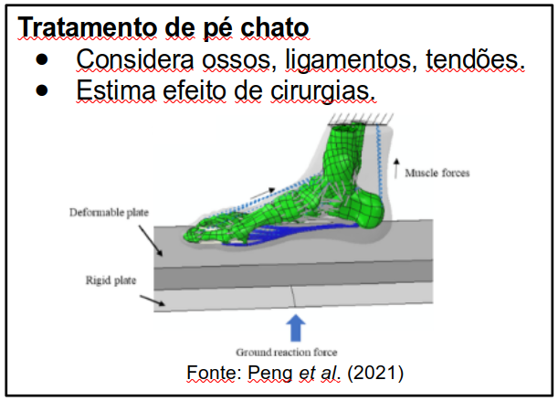
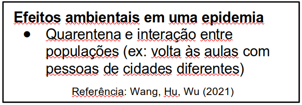
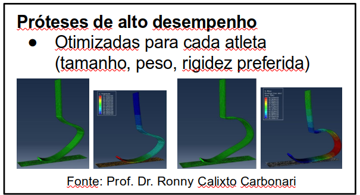
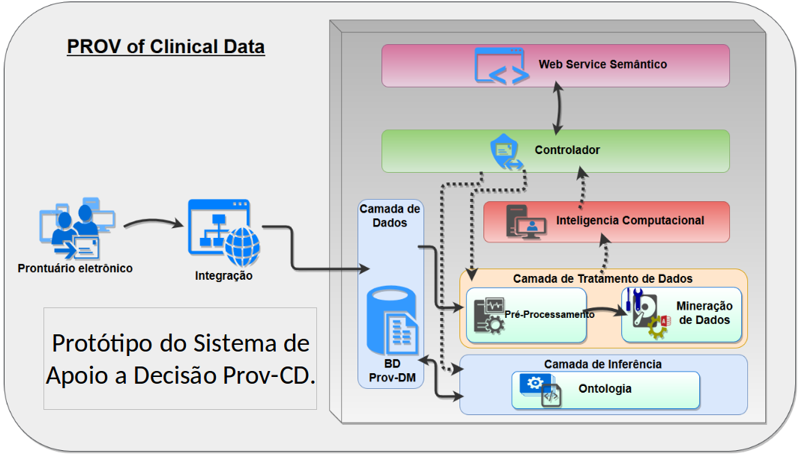
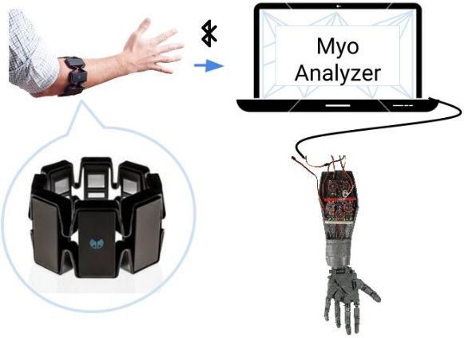
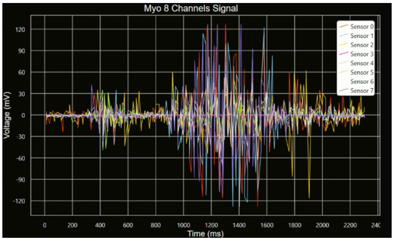
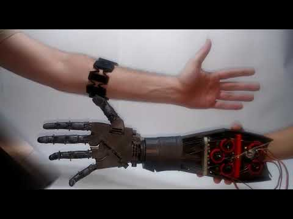

Sistemas computacionais aplicados a ciências da vida
Profs. Drs. Ana Carolina Simões, Diogo Soriano, Fernanda Almeida, João Silva Jr. e João Salinet Jr.
O que são sistemas computacionais aplicados a ciências da vida?
- Aplicação do conhecimento adquirido nas áreas de Ciências da Saúde, modelagem matemática e de recursos computacionais.
- O aluno obterá conhecimento para compreender questões ligadas à Saúde e desenvolver modelos computacionais como soluções tecnológicas para solucionar problemas.
Áreas de atuação:
- Bioinformática;
- Informática Biomédica;
- Sistemas de Informação e Gestão em Saúde;
- Processamento de Sinais e Imagens Médicas;
Modelagem
Modelagem é a área em que se obtém uma representação matemática simplificada de fenômenos complexos. Ou seja, algo do mundo real é traduzido em equações, escolhendo só o que é essencial para o que precisamos. Isso permite fazer simulações para estudar, modificar ou controlar algo aparentemente complexo demais para nossa intuição.

Em um dos exemplos de aplicação, o pé pode ser modelado para se estudar o efeito de cirurgias para correção de pé chato. São considerados os ossos, ligamentos, tendões e forças aplicadas durante uma caminhada para se estudar a distribuição dos esforços resultantes de cada tipo de cirurgia, permitindo uma melhor previsão dos resultados.

Modelagem pode ser usada para estudar a progressão de uma doença durante uma epidemia. Algumas perguntas que podem ser respondidas são: o quanto ajuda termos uma quarentena? Qual o efeito de uma volta às aulas quando temos duas populações com alunos no mesmo espaço?

Outro exemplo é a otimização de próteses de alto desempenho para atletas paralímpicos. Como cada atleta tem tamanho, peso e preferência de rigidez da prótese, é possível usar a modelagem para projetar e otimizar a geometria das próteses de modo individual. Aqui, temos duas próteses com rigidez diferente, obtidas através de geometrias geradas pelo computador. A simulação mostra as deformações quando estão em uso.
PENG, Y. et al. Biomechanical comparison among five mid/hindfoot arthrodeses procedures in treating flatfoot using a musculoskeletal multibody driven finite element model, Computer Methods and Programs in Biomedicine, v. 211, p. 106408, 2021.
WANG, M.; HU, Y.; WU, L. Dynamic analysis of a SIQR epidemic model considering the interaction of environmental differences. J. Appl. Math. Comput., 2021.
Bioinformática Aplicada à Saúde e Informática Médica
Esta página descreve várias áreas de pesquisa em Bioinformática Aplicada à Saúde e Informática Médica:
A Bioinformática é um campo de pesquisa interdisciplinar destinada ao desenvolvimento e aplicação de métodos matemáticos e computacionais para solucionar questões importantes na biologia e na medicina. Ela fornece tecnologias que permitem aos cientistas utilizarem grandes volumes de dados produzidos por meio de iniciativas de genômica e proteômica, bem como com as abordagem empregadas para sua interpretação.
Já a Informática Médica trata dos aspectos teóricos e práticos relacionados ao processamento e a comunicação eficiente das informações em saúde. Sua evolução responde, entre outros fatores, às necessidades de um medicamento individualizado, ou centrado no paciente e ao avanço tecnológico no diagnóstico.
A Bioinformática e a Informática Médica quando aliadas refletem na melhora do desenvolvimento de aplicativos voltados ao apoio à decisão médica, como também na construção de sistemas de informação e gestão em Saúde mais especializados, permitindo atrelar informação sobre moleculares sobre genes com a história clínica do paciente. Nesses dois campos de pesquisa a finalidade é a mesma: obter mais compreensão sobre uma determinada enfermidade e assim, auxiliar profissionais de Saúde na determinação do diagnóstico e prognóstico, como também, métodos terapêuticos personalizados.
Referências:
https://www.mtu.edu/medical-informatics/what- is/
https://pt.wikipedia.org/wiki/Inform\%C3\%A1tica_m\%C3\%A9dica
http://genybioinformatica.galeon.com/1.htm
Bioinformatics and Health Informatics Group
Profa. Dra. Fernanda Almeida
O grupo de pesquisa BHIG (Bioinformatics and Health Informatics Group) atua no desenvolvimento de plataformas para a integração e análise de dados médicos e biológicos para auxiliar no diagnóstico médico e no entendimento de patologias.
Linhas de pesquisa principais:
- Gerenciamento e Análise de Dados em Sistemas de Informação Biológicos e Médicos: desenvolvimento de sistemas de aprendizado em saúde capaz de gerenciar e analisar dados clínicos de pacientes proveniêntes de plataformas distintas e, monitoramento do ciclo de "vida" do dado, desde a sua entrada até a geração do conhecimento.
- Estudo e aplicação de técnicas de reconhecimento de padrões para análise de genomas: estudo, analise e aplicação de técnicas de SVM para identificação de características mais peculiares entre genomas.

Relação Genética para Câncer de Próstata
Profa. Dra. Ana Carolina Simões
Estuda-se os marcadores genéticos para descobrir e entender a relação entre genes nas doenças e no desenvolvimento de organismos, usando a implementação de programas em conjunto com a analise de dados de genômica e de expressão de genes.
Clustering Hierárquico com mRNAs de genes selecionados como classificadores de diagnóstico para câncer de próstata.
O que é Processamento de Sinais Biológicos?
O corpo humano produz informações de diferentes naturezas para a manutenção da vida. Tais informações são codificadas em sequências de valores que podem ser medidas por sensores externos. Estes medem grandezas físicas tais como condução elétrica nos nervos, pressão, ou níveis de químicos, entre outras variáveis. Esses sinais podem ser analisados e utilizados para fins como controlar dispositivos assistivos, para monitoramento do estado de pacientes ou mesmo facilitar o disgnóstico médico.
Próteses Mioelétricas de Membro Superior
Prof. Dr. Diogo Soriano
- Amputados podem experimentar dificuldades em utilizar dispositivos dentro ou fora de casa.
- Essas dificuldades podem ser reduzidas pelo uso de membros prostéticos superiores.
- Novos recursos permitem o acesso a tal tecnologia tais como novas estratégias em processamento de sinais, sensores, dispositivos eletrônicos, protocolos de comunicação e manufatura em impressão 3D.
- Este trabalho apresenta uma interface para o processamento e análise de sinais mioelétricos que tem por propósito o controle de uma prótese de membro superior.
 
Referencias:
S. Masson et al., “Integrating MYO Armband for the Control of Myoelectric Upper Limb Prosthesis", CBEB 2016.
Sistemas de Diagnósticos para Doenças do Coração
- Modificações na anatomia e fisiologia do coração al- teram a propagação do impulso elétrico pelo músculo cardíaco, afetando sua contração, e favorecendo o surgimento de graves arritmias.
- Neste projeto, sistemas contendo técnicas avançadas de processamento de sinais cardíacos são desenvolvidas, para inclusão em equipamentos médicos comercias (invasivos e não invasivos), auxiliando a localização de áreas responsáveis pela manutenção das arritmias, contribuindo para tratamentos efetivos.
Simulações fluidodinâmicas na Engenharia Biomédica
Simulações fluidodinâmicas na Eng. Biomédica:
- Escoamento de sangue em vasos
- Escoamento de ar nas vias aéreas
- Escoamento em dispositivos médicos
Outra área importante da modelagem aborda o escoamento de biofluidos em sistemas do corpo humano,
como o exemplo ilustra o fluxo de sangue em uma bifurcação arterial.
Os resultados mostram a força que a parede do vaso arterial sofre, e detalhes dos padrões do fluxo de sangue.
Este tipo de simulação permite a previsão do desenvolvimento de doenças, analisar como ocorre a entrega e absorção de medicamentos e
até mesmo o projeto e otimização de dispositivos para diagnósticos e tratamento de doenças.
Inteligência Artificial Aplicada à Saúde

- Inteligência artificial para controle de próteses;
- Inteligência artificial para diagnóstico de doenças a partir de sinais e imagens médicas (exames);
- Controle automático de variáveis biológicas;